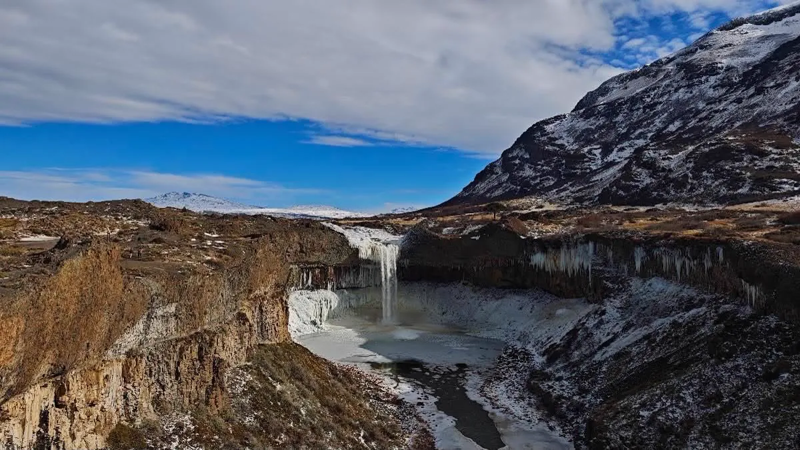

Salto del Agrio congelado en Caviahue

1 / 5
Caviahue y alrededores · Invierno
Una excursión a una de las postales más conocidas de Neuquén: en invierno la cascada se rodea de hielo y columnas congeladas.
En los inviernos más fríos, el Salto del Agrio se cubre de columnas de hielo que cuelgan de las paredes de basalto y la olla queda en parte congelada: un paisaje que muy pocos llegan a ver.
En invierno el acceso es intransitable para vehículos comunes: la visita se hace como excursión, con prestadores y vehículos preparados para la nieve. Consultá el estado del camino y las condiciones del día antes de planificarla.
Ubicación
Salto del Agrio
Ver ubicación en Google MapsTu lugar en Caviahue
Casas, cabañas, departamentos y hostal boutique para disfrutar de la Patagonia con tu familia, amigos o pareja. Reservá online o por WhatsApp.